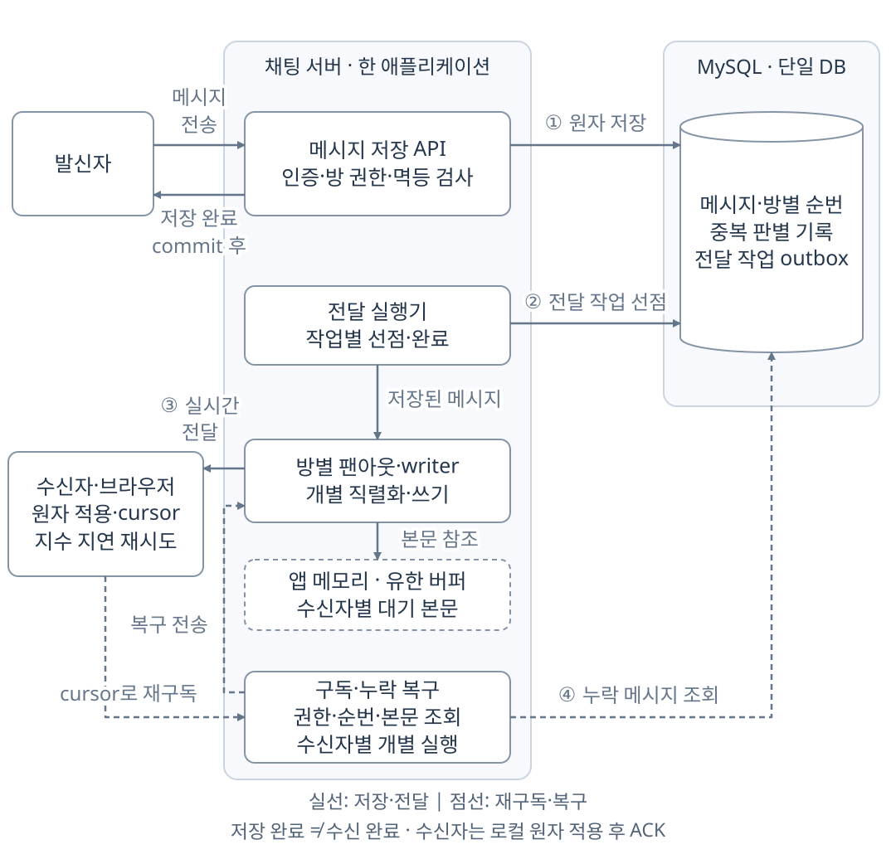
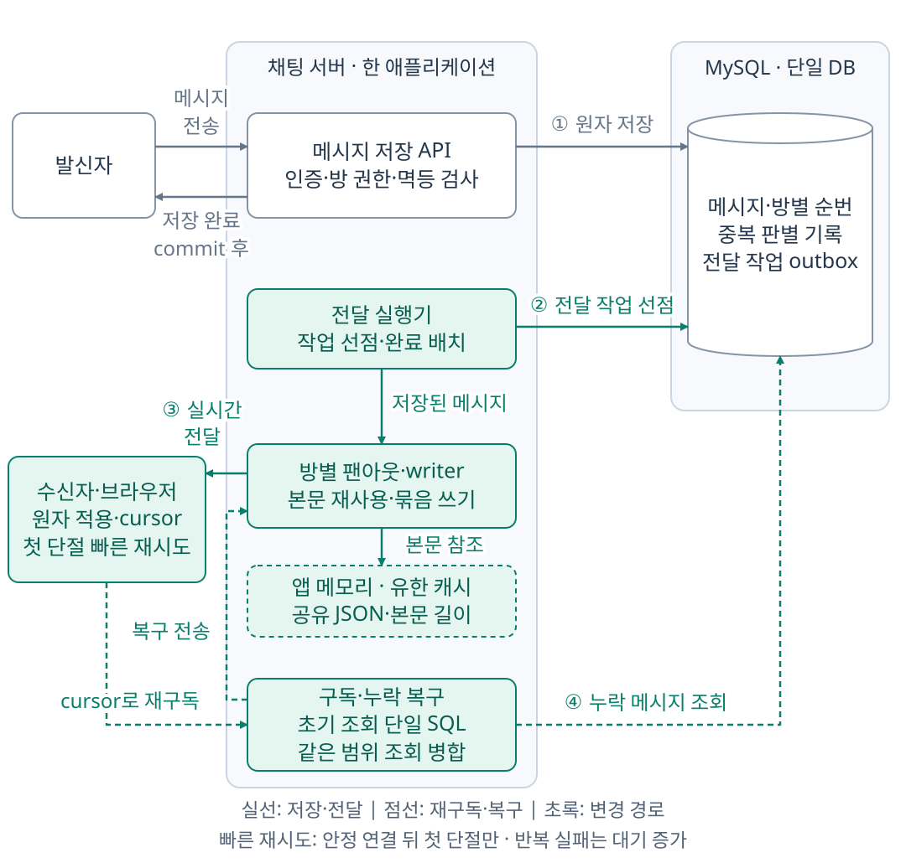

STORYBRIDGE / ENGINEERING NOTES
StoryBridge 채팅 서버 설계·성능 개선
인기 방과 느린 수신자가 섞여도 일반 방의 메시지가 제때 도착하도록,
저장 이후의 팬아웃과 재접속 경로에서 지연 원인을 찾았다.
StoryBridge는 여러 기기와 탭에서 같은 방의 대화를 이어 보는 채팅 기능을 제공한다. 이번에는 고정 구성원의 1:1·소규모 방을 대상으로 저장·멱등성·팬아웃·재접속 복구를 재구현했다. 저장에 성공해도 일부 수신자가 늦게 받는 문제가 있어, 인기 방과 느린 수신자가 섞인 부하에서 DB 조회와 전송, 재접속 대기를 분석했다.
최종 구현은 직접 등록한 WebSocket 핸들러와 MySQL을 사용하는 단일 채팅 서버다. 같은 방에서 반복하던 복구 조회와 JSON 직렬화를 공유하고, 이미 대기 중인 소켓 프레임을 batch로 보내 반복 작업을 줄였다. 이후 동시 재접속에서 일반 방 수신이 늦어지는 원인을 추적해 초기 구독 조회와 브라우저 재시도 정책을 바꿨다.
RabbitMQ 기반 서버 간 전달은 별도로 구현했다. 두 gateway 사이의 메시지 전달과 broker 단절·서버 종료 후 복구를 검증했으며, 최종 단일 서버 개선과의 통합 시험은 수행하지 않았다.
주요 측정 결과
동일 로그 복구의 CPU 시간 감소
조회·직렬화·소켓 쓰기 개선을 비교하며 메시지 1,810건을 미리 저장하고, 각 메시지를 받아야 하는 연결별로 합산한 601,000건을 복구했다. 신규 송신 없이 전후 각 3회 측정한 서버와 MySQL의 합산 CPU 시간 중앙값은 180.34초에서 140.52초로 약 22% 줄었다. 최종 재접속 개선까지 포함한 전체 전후 개선율은 아니다. 조회·소켓 배치 비교
동시 재접속 시 일반 방 수신 지연
500연결·HTTP 45건/초·600초 조건에서 전후 각 3회 비교했다. 일반 방 메시지 5,400건은 매회 모두 저장됐고, 최초 SEND 후 250ms 이내에 예정 수신자 모두가 받은 비율은 95.46~98.19%에서 98.74~99.30%로 증가했다. 수신 완료는 k6의 연속 메모리 적용 기준이다. 재접속 지연 분석
500연결은 31명의 다중 탭으로 구성했다. 인기 방 400연결 중 100개에 40ms 적용 지연을 주고 300초에 해제했으며, 전체 연결을 30초마다 강제 종료했다. 최종 비교의 한 반복에서 전체 저장 수락률은 94.82%로 기준 95%에 미달했다. 느린 연결의 회차 내 복구 실패도 남아 있다.
개선 전후의 메시지 흐름
개선 전은 이번 재구현의 기준 구현이다. 전후 구현은 저장 트랜잭션과 commit 이후 응답 조건이 같으며, 전달·복구 경로의 조회·직렬화·소켓 쓰기 방식이 다르다.


구현 구성과 검증 범위
| 구분 | 역할과 검증 범위 |
|---|---|
| 과거 프리랜서 서비스 | 과거 서비스의 개발 경험. STOMP SimpleBroker→RabbitMQ Relay 전환 이력과 CPU 측정값은 이번 재구현과 별도다. |
| 이번 기준 구현 | 단일 서버·MySQL에서 저장·순서·멱등성·outbox·연속 복구·로컬 원자 적용을 구현했다. |
| 현재 단일 서버 개선 | 공유 조회·표현 캐시·outbox/소켓 배치·초기 구독·브라우저 재시도를 개선했다. 검증한 입력률과 목표 미달 항목은 각 측정 결과에 명시했다. |
| RabbitMQ 다중 서버 | 서버 간 실시간 알림과 MySQL 로그 복구를 구현했다. 두 gateway의 메시지 전달·broker 단절·서버 종료 후 재접속·queue overflow를 별도로 검증했다. |
주제별 문서
- 저장·복구: 저장 트랜잭션 → credit·원자 적용·종료
- 팬아웃 최적화: 반복 조회의 비용 → 공유 읽기와 표현 캐시 → 저장 대기와 소켓 배치
- 최종 구현: 재접속 원인과 개선 → 반복별 실패·비용
- 확장과 한계: 연결당 메모리 → 부하 축별 탐색 → RabbitMQ 서버 간 전달
전체 아티클 11편
구현 코드·SQL, 비교 결과, 반복별 측정값과 진단 자료를 주제별로 정리했다.
메시지 저장 트랜잭션과 전송 멱등성
message·roomSeq·receipt·outbox의 원자적 저장과 응답 유실 처리
설계 · 구현 · 검증수신 flow control과 로그 기반 복구
credit·연속 cursor를 이용한 수신량 제한과 재접속 복구
설계 · 구현 · 검증버퍼 기반 전달과 수신자별 로그 조회 비교
동일 메모리 예산에서 수신 지연·DB 조회량·CPU 사용량 비교
설계 · 구현 · 검증복구 조회 병합과 메시지 직렬화 재사용
방 단위 조회 병합, 불변 JSON 캐시, outbox 배치와 복구 스케줄링
설계 · 구현 · 검증WebSocket 수신 버퍼의 메모리 사용량 개선
Tomcat 연결별 버퍼 선할당을 partial message 처리로 변경
설계 · 구현 · 검증RabbitMQ 기반 다중 gateway 메시지 전달
gateway별 queue 라우팅과 broker 단절·서버 종료 시 로그 복구
설계 · 구현 · 검증k6 부하 시험과 처리 한계 분석
연결 수·송신률·팬아웃·복구량별 병목과 자원 사용량
설계 · 구현 · 검증혼합 부하의 저장 경합과 소켓 쓰기 최적화
방별 admission 분석, 단일 SELECT 조회와 소켓 쓰기 배치 적용 결과
상세 근거혼합 부하 상세 측정 결과
입력률별 수락·지연·미확정, 동일 로그 복구와 지속 시험 결과
설계 · 구현 · 검증같은 메시지가 일부 수신자에게만 늦었던 이유
집단 재접속의 초기 구독 큐 경합과 클라이언트 재시도 대기 분석
상세 근거재접속 부하 상세 측정 결과
연결별 복구 시간, 메시지별 수신 완료율과 서버·발생기 비용
측정 지표 정의
MySQL 저장, outbox 완료, broker 확인, socket write, 클라이언트 메모리 수신, 영속 적용, 읽음은 각각 별도로 집계했다. 대규모 k6 시험은 연속 메모리 수신 성능을 측정했으며 SQLite·IndexedDB의 원자 적용은 기능·장애 시험으로 검증했다.
최종 비교의 수신 지연은 최초 논리 HTTP SEND부터 각 수신자의 연속 cursor 적용까지다. 메시지별 전원 250ms 수신 비율의 분모에는 거절·미확정·단절 중 송신을 포함했다. 지연 p99는 완료 표본으로 계산하고 미완료 건수를 별도로 표시했다.
서버 CPU는 별도 표기가 없으면 gateway와 DB의 합계이며, RabbitMQ 비교에는 broker 비용을 포함했다. 프로세스 CPU 100%는 논리 CPU 하나의 사용량이다. 호스트 CPU는 장비 전체를 기준으로 하며, 같은 노트북에서 실행한 발생기와 다른 프로세스의 비용도 포함한다.